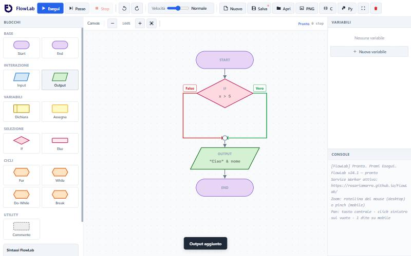

FlowLab: imparare gli algoritmi con i diagrammi di flusso
Prima di scrivere codice bisogna imparare a ragionare per passi. Per questo ho creato FlowLab: un'app web gratuita in cui gli studenti costruiscono un diagramma di flusso, lo eseguono e lo vedono trasformarsi in codice.

FlowLab funziona direttamente nel browser, senza installare nulla e senza account, su computer, tablet e telefono. Una volta aperto continua a funzionare anche offline, utile nei laboratori dove la rete non è sempre affidabile.
Apri FlowLab in un'altra scheda e segui la guida passo passo.
L'interfaccia in un colpo d'occhio

1 2 3 4 5- 1Blocchi: la palette da cui scegli le istruzioni. Basta un clic per aggiungerle al diagramma.
- 2Canvas: il diagramma. Puoi zoomare con la rotellina e spostarti trascinando.
- 3Variabili: mostra in tempo reale il valore di ogni variabile.
- 4Console: dove compaiono gli Output e dove si rispondono gli Input.
- 5Comandi: Esegui, Passo, Stop, velocità, salvataggio, export PNG e generazione del codice in C e Python.
I blocchi disponibili
I blocchi seguono le forme classiche dei diagrammi di flusso, ognuna con il suo colore, così la struttura di un algoritmo si riconosce a colpo d'occhio.
| Gruppo | Blocchi | A cosa servono |
|---|---|---|
| Base | Start, End | Inizio e fine del programma |
| Interazione | Input, Output | Leggere dati e mostrare risultati |
| Variabili | Dichiara, Assegna | Creare variabili e cambiarne il valore |
| Selezione | If, Else | Prendere decisioni con una condizione |
| Cicli | For, While, Do-While, Break | Ripetere istruzioni |
| Utility | Commento | Spiegare il diagramma con delle note |
La sintassi è volutamente vicina al linguaggio naturale:
Input nome
Output "Ciao " & nome
If x > 5 AND x < 10Esecuzione passo passo
È la funzione più utile in classe. Con Passo il programma avanza di un blocco alla volta: il blocco attivo si illumina, il pannello Variabili si aggiorna e la console mostra cosa succede. Così gli studenti vedono perché un ciclo non termina o perché un If prende il ramo sbagliato.
Con il cursore Velocità si può anche lasciar scorrere l'esecuzione da sola, abbastanza lenta da seguirla con gli occhi.
Dal diagramma al codice
Quando il diagramma funziona, con i pulsanti C e Py FlowLab genera il programma equivalente, da copiare o scaricare. È il ponte tra il ragionamento e il primo linguaggio di programmazione: lo stesso algoritmo, scritto in due modi.
# Generato da FlowLab — linguaggio Python
def main():
n = int(input())
somma = 0
for i in range(1, n + 1):
somma = somma + i
print(somma)
if __name__ == "__main__":
main()Il diagramma si può anche salvare in un file, per riaprirlo dopo, o esportare come immagine PNG da inserire in una relazione o in una verifica.
Anche dal telefono
Su smartphone l'interfaccia si riorganizza: il diagramma occupa tutto lo schermo, mentre Blocchi e Console si aprono dalla barra in basso, insieme ai comandi Passo, Esegui e Stop.
Gli studenti possono così esercitarsi anche a casa o sul bus, senza un computer.
Come lo uso in classe
- Prima il problema, poi i blocchi. Faccio descrivere l'algoritmo a parole, poi lo si costruisce in FlowLab.
- Previsione e verifica. Prima di premere Passo chiedo: "Quale ramo prenderà l'If?". Poi lo si controlla insieme.
- Il salto al codice. Solo quando il diagramma funziona si genera il codice in C o Python e lo si confronta riga per riga.
FlowLab è gratuito: se lo usi con i tuoi studenti, scrivimi e raccontami come va.
Provalo subito
Si apre nel browser, senza installazioni né registrazione.
Apri FlowLabAltri articoli